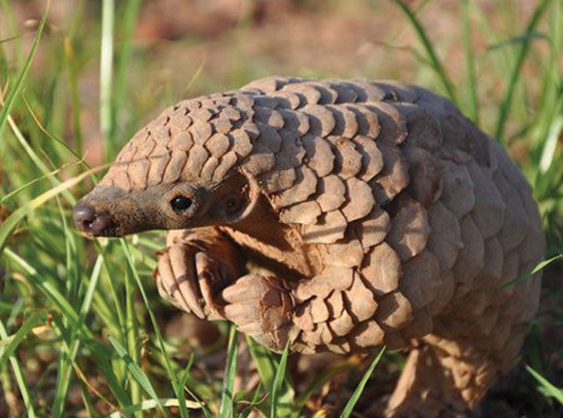
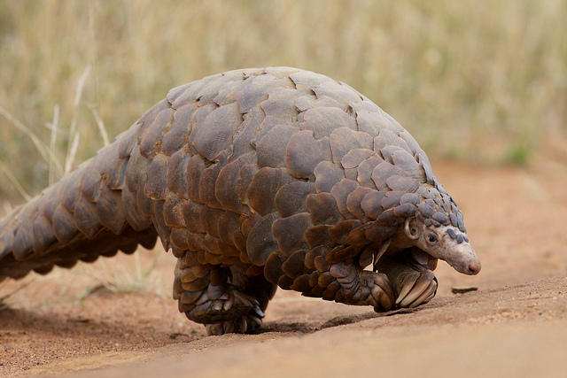

Pangolins are mammals that live in tropical forests, dry woodlands, and the Savannah desert. They are also known as the "scaly anteaters" because they resemble anteaters. Much like anteaters, the pangolin have long tongues that they use to eat insects and termites.They grow up to the size of a small cat, but are completely covered in scales. There are eight different types of pangolins that live in Asia and Africa. Two are critically endangered, two endangered, and four that are vulnerable. The Chinese and Sunda pangolins are critically endangered. The Indian and Philippine pangolins are endangered. Then Cape (or Temmick's Ground), the White-Bellied (or Tree), the Giant Ground, and the Black-Bellied (or Long-Tailed) pangolins are all vulnerable.
No one knows exactly what the pangolin does because they are very secretive. Pangolins are nocturnal, Chinese pangolins sleep in underground burrows during the day while others climb trees. They mostly dig and burrow to find the insects and termites to eat, but can swim if necessary. When under attack, the pangolin will hiss, puff, and lash their sharp tails. If the fight is too intense for them they will curl up into spikey balls until the attacker leaves. Since they have no teeth, the pangolin's only protection is its sharp scales.
 
The Pangolins are the most trafficked mammals in the world. Pangolins are hunted for illegal trade regularly. bout 100,000 pangolins have been captured every year and sold illegally for the past decade. People want their sharp scales, which they grind down for use to put in Chinese medicine which is believed to treat many conditions. This medicine can only be purchased on the black market for over $3,000 a kilogram.
Their scales are also used for clothing. In Vietnam and China pangolin meat are considered a luxury food, usually being the most expensive thing on the menu, selling at $150 per pound. The animal is killed at the table in front of the guests at the restaurant, to show that it is being served fresh. To watch a video of a pangolin click here.
here.